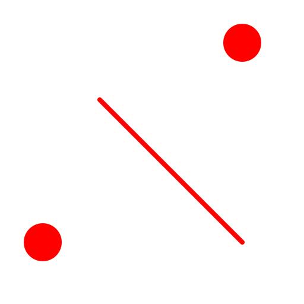

2点及び半径
ツールバー/アイコン:


メニュー: D 描画 - A 弧 - 2点及び半径
ショートカット: A, D
コマンド: arcradius | ad
説明:
出発点、終点および半径を使用して、弧を描きます。
手順:
-
弧半径をオプション・ツール・バーにタイプ入力して、弧方向(右回りにあるいは左回りに)およびソリューション(より大きな弧あるいはより小さな弧)を選んでください。
- 弧の出発点を指定します。
- 弧の終点を指定します。
終点がソリューションのための出発点からあまりにもはるか遠くにある場合、最も近いソリューションが描画されます(与えられた半径および方向を備えた半円)。